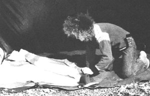
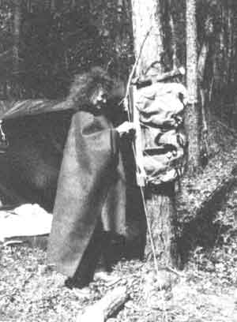

On our first hitchhiking trip together, my partner A1 and I carried low-cost fiberfillinsulated sleeping bags. (We simply couldn't afford goose-down bags and knew that the feathery stuffing loses its warmth-giving properties when it gets wet, anyway.) Pulling out of Fairbanks, Alaska in September, we roamed down the Pacific coast as far south as San Francisco. After Golden Gate country, we decided to indulge ourselves, and took a bus to Ohio. From there we went back to thumb power while traveling to Florida and Connecticut and then homeward through Maine and across Canada. We reached Fairbanks with the first leaves of spring.
As you can imagine, we encountered some pretty wild climatic changes on that journey. And while our fiberfill bags were all right sometimes, they were excessively hot or cold much too often, frequently damp, always bulky, and-worst of all-they wouldn't zip together to make a double bed. We learned quite a few things on that trek, not the least of which was that we needed to look for new ways to achieve sleeping comfort.
For the next couple of years we lived on an island in Alaska's inland waterway, outside of Sitka. There, the rain-forest climate provided new lessons. Most important, the cold, wet weather tutored us in the benefits of dressing in-and sleeping under-wool . . . the lightweight, rugged, nonbulky, natural insulating material that holds in body heat even when it's soaking wet. Luckily, we'd bought a stack of wool blankets (for a buck each!) at a factory outlet some years before, and you can believe we put them to good use during those long north-country winters!
At any rate, the next time we came down with a bad collective case of itchy feet, we'd wised up enough in the ways of warmth and comfort to substitute wool for the heavier, bulkier, and all-around less satisfactory synthetics-filled clothing and sleeping bags we'd lugged through our first journey. So, in preparation for the upcoming travel adventure, I grabbed four of our blankets, an inchwide roll of Velcro-type tape, and my sewing kit . . .and set to work. Before long, AI and I had not only the double bag we'd missed so much on our first trip, but also comfy wool ponchos.
SEW YOUR WAYTO SNUGGLING COMFORT
For the sleeping bag, I sewed the tape onto the blankets (hooked surface outward on one, looped side up on the other), working across the bottom edges and up the sides to about armpit height .. . to form a selfadhering woolen envelope. Then, to produce an itchpreventive lining, I stitched together the bottoms of two inexpensive Indian cotton sheets (often called tapestries) and sewed up the sheets' sides to about chest height.
Before a trip, we spread the sleeping bag on a waterproof ground cloth, put the sheet liner in the bag, and lay a rope across the middle so that its ends extend a foot or so beyond the sides of the bundle. After rolling up the whole works, we bend the lightweight, compact load over the top of Al's pack and downward into a horseshoe shape. Then we pull the rope ends tight and tie them to secure the package firmly. To augment this arrangement, I further anchor the bedroll to Al's pack with several foot-long straps of the self-adhering tape (it's a lot easier to rip hook-and-loop material loose than it is to fight wet knots when your fingers are cold).
EITHER/OR
To make a versatile bag that can serve either as a double or as two singles, all you have to do is change the positioning of the Velcro-type tape. On the first blanket, sew strips-loops outward-along one side and halfway across the bottom of the material. Then stitch more tapehooks outward this time-down the other side and across to the middle of the blanket's bottom. Reverse both placement and surface sides of the tape on the second blanket . . . so that the two halves of the bag will match up to stick together. Now, if you want to convert the double bag to single sleeping compartments, simply fold each blanket in half lengthwise, and you're in business. With this setup you'll want to leave the liner sheets unsewn, using one inside each bag, or put Velcro-type tape on them, just as you did with the blankets.
OH,PONCHO!
To make our outer wear, I cut head-sized holes in the center of the two remaining blankets, then sewed reinforcement hems of bias tape around these perforations. Before getting on the road, we roll these cover-ups inside a second waterproof ground cloth and strap the bundle onto my, pack. During the day the ponchos keep us warm (if need be), and at night they serve as extra blankets . . . one on top of and one beneath us. This fourblanket combination has kept us comfortable -most of the time-for some years now, in climates as diverse as those of Alaska and Hawaii. The spare ground cloth covers our packs and guitars on wet nights while AI and I snuggle together inside a small tent in the warmth of our woolen bed.
All in all, we're quite happy with this camping outfit and wouldn't trade it for all the people-insulating synthetic materials in the world. The hair of the sheep is light, warm, easy to wash, and relatively quick to dry . . . and it saves enough weight and space in our packs to allow us to carry extra supplies for extended journeys.
When (and if) this batch of camping gear wears out, instead of spending a wad on costly man-made equipment, I'll just buy four more woolen blankets . . . which should leave us enough money to finance another trip!
EDITOR'S NOTE: While not everyone wall luck into dollar-apiece wool blankets, MOTHER'S staffers had no trouble turning up the $14 per surplus covers shown in the photos.
Readers concerned with out-of-doors comfort might want to look into Harry Roberts' Keeping Warm And Dry (Stone Wall). Roberts is editor of Wilderness Camping magazine, and his book's 133 pages are crammed with good scoop on just what the title indicates. You can order Keeping Warm And Dry for $7.95 plus $1.25 postage and handling from Mother's Bookshelf °, I DS Stoney Mountain Road, Hendersonville, North Carolina 28791.
|
 |
 |
|